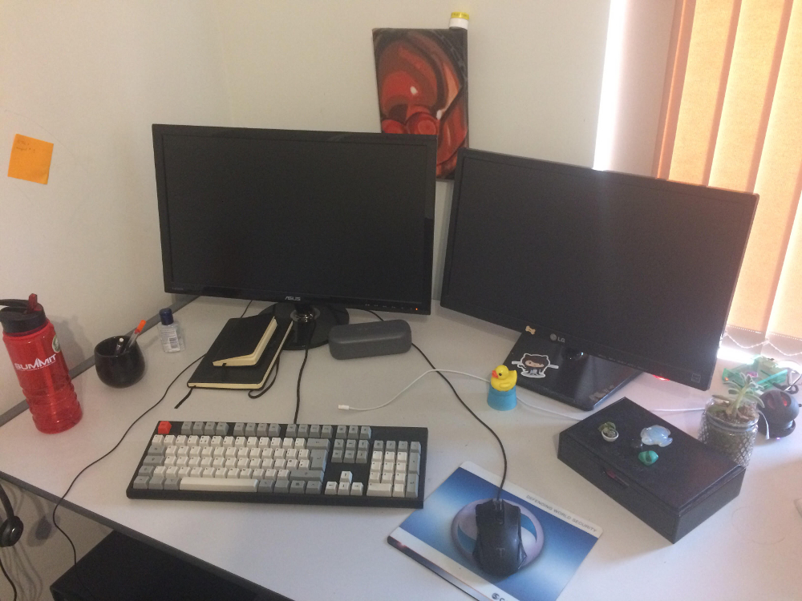
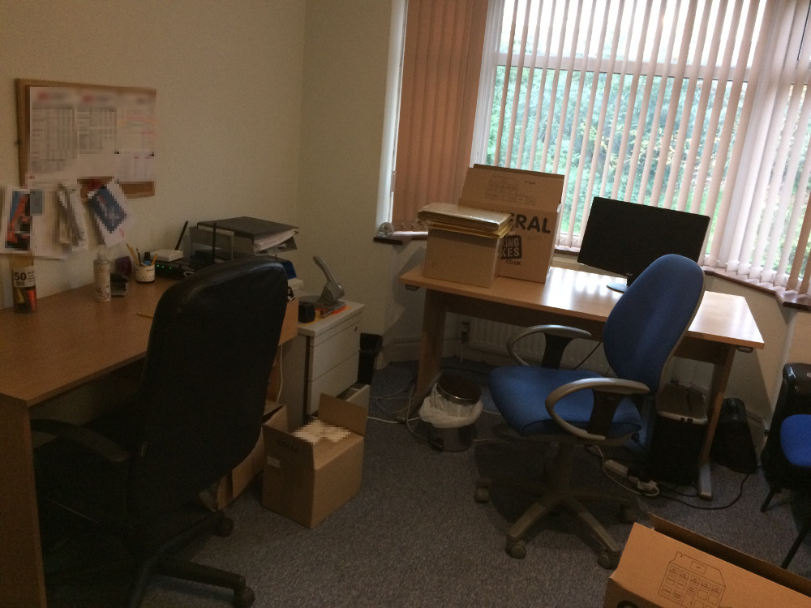

As a developer, I sit down an awful lot. I'm not cool enough to have a standing desk or one of those giant bouncy-balls, so my office space has so far been defined by swivel chairs and plain old office desks. Here is the history of my career so far. In desks.

I stole commandeered this spot when the rightful owner went on holiday and we re-organised the entire office without them. I went from being downstairs in the open plan room to being upstairs with a door that closed all the way and drawers on my desk.
My first desk at my first job! Well. My first two desks. I started facing the wall, and then, at some point, migrated over to the window seat.
